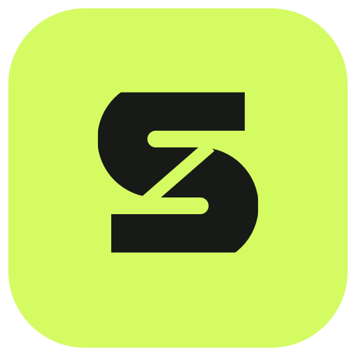
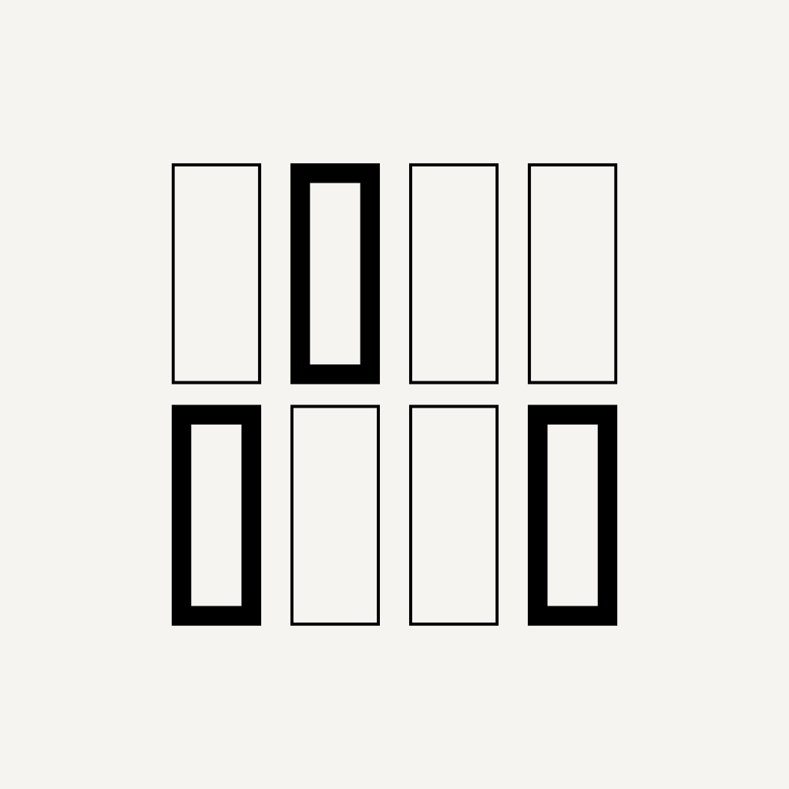
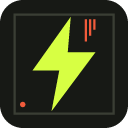

Independent thinking. Practical work.
Research / Tools / Independent appsIdeas worth testing.
Things worth building.
We turn good questions into open research, practical tools, and independent apps. Exploring how AI works. Building software that keeps people in control.
The work
Evidence over
assumptions.
Experiments in how models learn, reason, and behave. Including the results that challenge our expectations.
All 0 studiesIndependent apps
Software that keeps
you in control.
Private dictation. Local tools for agent work. Independent publishing. Software that keeps data and control close to the people using it.
All apps & software
Saylight
Private, on-device dictation for Mac. Your recordings never leave the computer, and your words are not collected by a transcription service.
macOS 13+ · English
Explore Saylight
Harness
Local desktop controls for working with AI agents. Make their work visible, set explicit boundaries, and keep a stop button within reach.
macOS · Linux
Explore Harness
Presskeep
Independent publishing for Mac and Linux. Keep control of your work when a platform removes the page, locks your account, or disappears.
macOS 11+ · Linux x86-64
Explore PresskeepELSEWHERE
A private, local launcher and window manager for Mac. Your searches, filenames, document index, notes, and clipboard history stay on your computer.
macOS 13+ · Apple Silicon & Intel
Explore ELSEWHEREDropbeam
Private, account-free file transfer for desktop. A short one-time code connects two people, and the files travel over an authenticated encrypted connection instead of sitting in a cloud drive.
macOS · Windows · Linux
Explore DropbeamBuilt to be used
Take it.
Test it. Build on it.
Research gets stronger when other people can pull it apart. Our code, datasets, and models are yours to explore.
Code & benchmarks
Real tasks. Reproducible evaluations.
Open datasets
Scientific literature. Research code. Training data.
Models
Tools for searching and understanding research.
We’re a small, independent research organization working on machine learning and autonomous systems.
We build tests, run experiments, and publish what we find. Benchmarks that measure real work. Data that others can use. Tools that make the next experiment possible.
Good questions deserve something you can run.
From the lab
Notes & perspectives.
The next question
Let’s find out.
A research question, a dataset, or a problem worth testing. We’re open to partnerships and sponsorships.
Start a conversation